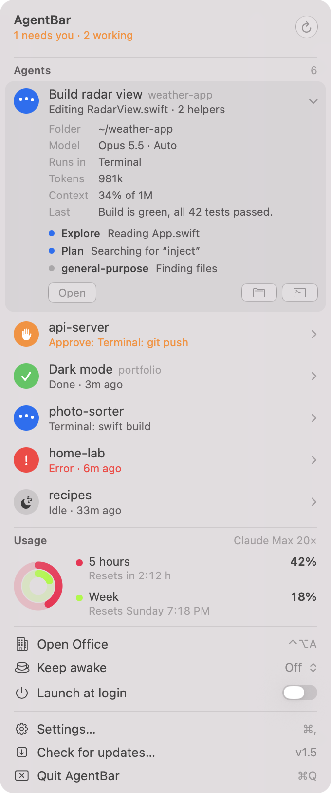
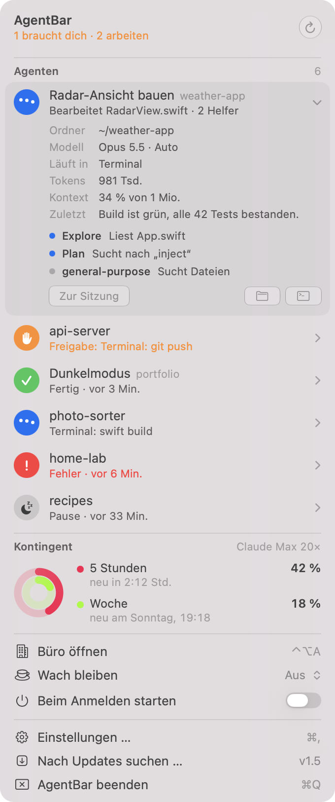
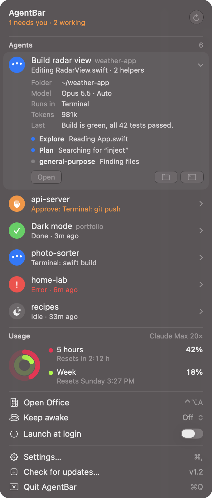
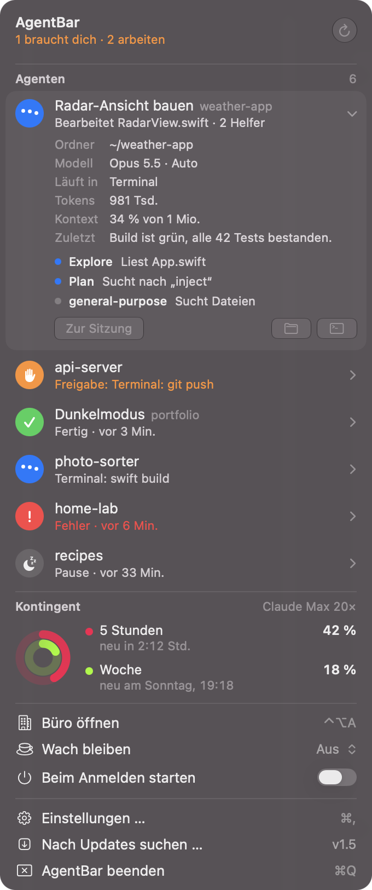
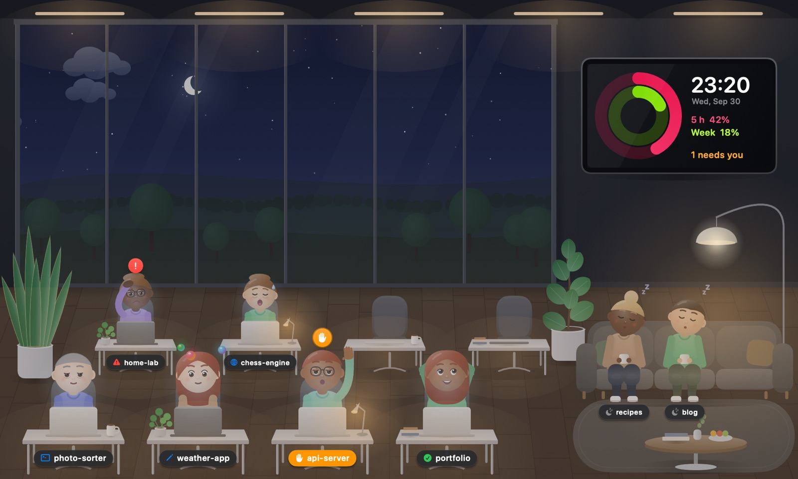
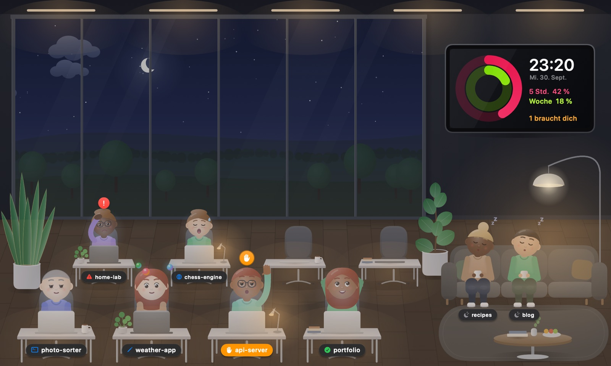
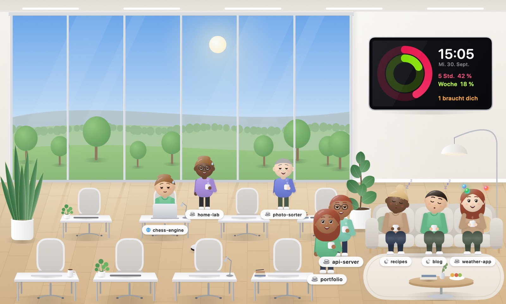

Your Claude Code agents, right in the menu bar.
And a tiny office where they actually work.
Deine Claude-Code-Agenten, direkt in der Menüleiste.
Und ein kleines Büro, in dem sie wirklich arbeiten.
Free & open source · macOS 14 or later · Apple Silicon · English & German Kostenlos & Open Source · macOS 14 oder neuer · Apple Silicon · Deutsch & Englisch
Designed to feel like a native macOS 27 system menu – quiet until an agent needs you. Fühlt sich an wie ein eingebautes macOS-27-Menü – ruhig, bis ein Agent dich braucht.




Working, waiting for approval, done, error or idle – for every session. With Claude Code hooks it knows instantly instead of guessing. Arbeitet, wartet auf Freigabe, fertig, Fehler oder Pause – für jede Sitzung. Mit Claude-Code-Hooks weiß AgentBar es sofort, statt zu raten.
Your 5-hour and weekly Claude plan usage, Apple-Watch style. The token is only read – never refreshed, never stored. Dein 5-Stunden- und Wochenkontingent im Apple-Watch-Stil. Der Token wird nur gelesen – nie erneuert, nie gespeichert.
Subagents show up as helpers of their session – in the list, and as glowing spheres orbiting their character. Subagenten erscheinen als Helfer ihrer Sitzung – in der Liste und als leuchtende Kugeln über ihrer Figur.
Click a session and the exact Terminal tab it runs in comes to the front. Ein Klick auf eine Sitzung holt genau den Terminal-Tab nach vorn, in dem sie läuft.
When an agent needs you, finishes or fails – and before your plan usage runs out. Wenn ein Agent dich braucht, fertig ist oder scheitert – und bevor dein Kontingent aufgebraucht ist.
Stop your Mac from sleeping – always, or only while agents are working. Verhindert den Ruhezustand – immer oder nur, solange Agenten arbeiten.
Press ⌃⌥A. Every session gets a desk. They type while working, raise a hand when they need you, and walk over for a coffee when they're idle. The fuller their context window, the more tired they look. The sky follows your local time. Drück ⌃⌥A. Jede Sitzung bekommt einen Schreibtisch. Die Figuren tippen beim Arbeiten, heben die Hand, wenn sie dich brauchen, und holen sich in der Pause einen Kaffee. Je voller ihr Kontextfenster, desto müder sehen sie aus. Der Himmel folgt deiner Uhrzeit.



You need Claude Code on a Mac with Apple Silicon. Du brauchst Claude Code auf einem Mac mit Apple Silicon.
Get AgentBar.zip from the latest release, unzip it and move AgentBar.app to /Applications.
Lade AgentBar.zip aus dem neuesten Release, entpacke es und zieh AgentBar.app in den Ordner Programme.
AgentBar isn't notarized by Apple, so macOS blocks it once. Open System Settings → Privacy & Security and click Open Anyway – or run: AgentBar ist nicht von Apple notarisiert, deshalb blockiert macOS den ersten Start. Öffne Systemeinstellungen → Datenschutz & Sicherheit und klicke Trotzdem öffnen – oder im Terminal:
xattr -dr com.apple.quarantine /Applications/AgentBar.appOnly needed once. Updates from the built-in update button are verified with an Ed25519 signature. Nur einmal nötig. Updates über den eingebauten Update-Button werden per Ed25519-Signatur geprüft.
Click Set up on the Precise detection card in the dropdown. AgentBar adds small hook commands to ~/.claude/settings.json (with a backup). They only append status lines to a local file – no network.
Klicke im Menü bei Präzise Erkennung auf Einrichten. AgentBar trägt kleine Hook-Befehle in ~/.claude/settings.json ein (mit Sicherung). Sie schreiben nur Statuszeilen in eine lokale Datei – kein Netzwerk.
Allow notifications when asked, optionally enable Launch at login, and press ⌃⌥A for the office. Mitteilungen erlauben, wenn gefragt wird, optional Beim Anmelden starten einschalten – und mit ⌃⌥A das Büro öffnen.
Everything stays on your Mac. AgentBar reads local Claude Code logs and talks to exactly two servers: api.anthropic.com for your plan usage and api.github.com for updates. No analytics, no telemetry. The code is open source.
Alles bleibt auf deinem Mac. AgentBar liest lokale Claude-Code-Protokolle und spricht mit genau zwei Servern: api.anthropic.com für dein Kontingent und api.github.com für Updates. Keine Analyse, keine Telemetrie. Der Code ist Open Source.